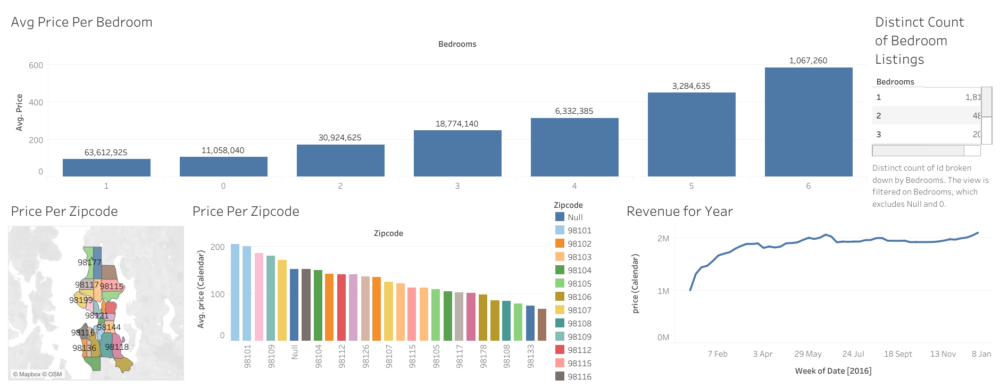

Price by property size
Bedroom categories make it possible to compare different listing sizes.
Dashboard / Tableau
A market viewed
from every angle.

A Tableau dashboard bringing together bedroom pricing, listing counts, geographic differences, and a calendar-based revenue view.
A single average price hides the differences between property size, location, and time. Those dimensions need to be visible together.
The dashboard pairs average price by bedroom count with a ZIP-code map and ranking. A listing-count view and annual revenue chart add supply and calendar context.
Bedroom categories make it possible to compare different listing sizes.
The map shows where ZIP codes sit; the ranking makes price differences easier to compare.
The published revenue view traces changes across the year alongside the listing comparisons.
The repository shares a dashboard screenshot and a Tableau Public link so visitors can continue exploring the original visual analysis.
Maps help orient a visitor, while ordered charts help compare values. Using both gives geography a practical role in the dashboard.